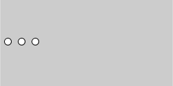
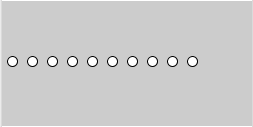
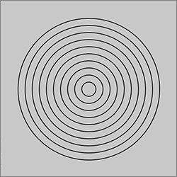
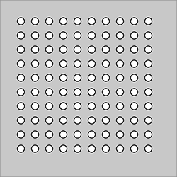
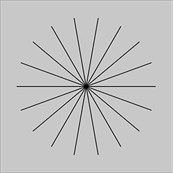

まずは図形を描く
基本図形のひとつである円を描くプログラムから始めます。どこに描くか、いくつ描くかをプログラムを使って指示します。基本図形を描くには、p5.jsの関数を使います。描画関数のインタフェイス(関数名や引数)は(ほぼ) Processingと同じです。描画域の大きさ指定
まず、setup()関数内で、Webページ上に描画する領域の幅と高さを指定する必要があります。それにはcreateCanvas(width, height)関数を使います。つまり、Processingではsize(width, height)と書いていたところがcreateCanvas関数に変わります。
【例】createCanvas(500, 125); // 幅500ピクセル、高さ125ピクセルの大きさ
円の描画と変数の活用
直径が10ピクセルの円を、(10, 60)の位置に描いてみましょう。
【リスト1-1】
function setup() {
createCanvas(500, 125); //500×125ピクセルの描画域
background(200); //背景をグレーにする
ellipse(10, 60, 10, 10); //円の中心の座標が(10, 60)
}
加えて、同じ大きさの円を(30, 60)と(50, 60)の位置に描いてください。

【リスト1-2】
function setup() {
createCanvas(500, 125); //500×125ピクセルの描画域
background(200); //背景をグレーにする
ellipse(10, 60, 10, 10); //一番左の円
ellipse(30, 60, 10, 10); //20ピクセル右に、2つ目の円
ellipse(50, 60, 10, 10); //さらに20ピクセル右に、3つ目の円
}
この例では、直接座標の数値を指定して図形を描いています。これが基本ですが、柔軟性がありません。3つ並んだ円の位置を、例えば右に15ピクセル動かしたいとすると、3つの円のx座標の値10, 30, 50をそれぞれ25,45,65に変えなくてはならず、間違いが起こりやすいです。3つの円は、規則的に並んでいるので(間隔が20ピクセル)、次のように書くことができます。
【リスト1-3】
function setup() {
createCanvas(500, 125); //500×125ピクセルのの描画域
background(200); //背景をグレーにする
var x = 10; //変数xは、左端の円のx座標の値
ellipse(x, 60, 10, 10); //一番左の円
ellipse(x+20, 60, 10, 10); //20ピクセル右に、2つ目の円
ellipse(x+40, 60, 10, 10); //さらに20ピクセル右に、3つ目の円
}
xは
変数で、左の円のx座標を保持しておくためのデータ領域です。varは変数を定義するためのJavaScriptのキーワードです。こうしておけば、x = 25；とするだけで、3つの円全体を15ピクセル右に描くことができます。このように変数を活用するとわかりやすく、間違えにくい書き方ができます。リスト1-3では、xの値は一度値が決まった後は変更されません。つまり、xは定数です。定数を宣言する場合、let x = 10;のように、キーワードletを使います。このスケッチではどちらでも構いませんが、letで宣言しておくと誤って値を変更するというミスを防げます。
たくさんの円を描く
次に円を10個描くことを考えます。リスト1－2の3つの円に続けて、ellipse()を全部で10回実行すると、円が10個描けます。

【リスト1-4】
function setup() {
createCanvas(500, 125); //500×125ピクセルの描画域
background(200); //背景をグレーにする
var x = 10; //変数xは、左端の円のx座標の値
ellipse(x, 60, 10, 10); //一番左の円
ellipse(x+20, 60, 10, 10); //20ピクセル右に、2つ目の円
ellipse(x+40, 60, 10, 10); //さらに20ピクセル右に、3つ目の円
ellipse(x+60, 60, 10, 10);
ellipse(x+80, 60, 10, 10);
ellipse(x+100, 60, 10, 10);
ellipse(x+120, 60, 10, 10);
ellipse(x+140, 60, 10, 10);
ellipse(x+160, 60, 10, 10);
ellipse(x+180, 60, 10, 10);
}
しかし、これはやっかいです。10個程度ならなんとかコピーと修正でできなくはありませんが、100個となると別の方法が必要になります。上の例をよく見ると、関数ellipse()が10回実行され、その時の引数が規則的に変わっています(第一引数だけが20ずつ増加)。このように規則的に変化する処理を繰返す時に、役立つのが繰返しを行うfor文です。次のコードは、上のサンプルと同じ処理を行います。
【リスト1-5】
function setup() {
createCanvas(500, 125); //500×125ピクセルの描画域
background(200); //背景をグレーにする
var x = 10; //変数xは、左端の円のx座標の値
for (var i=0; i<10; i=i+1) { //iが10未満の間、iに1足しながら繰り返す
ellipse(x+i*20, 60, 10, 10); //x座標はiの値に従って増える
}
ellipse(x+180, 60, 10, 10);
}
変数ｉは繰返した回数を覚えておく場所で、その値が10になった時、繰返しを終了します。
演習問題

【問題1-1】描画領域(250 X 250)の中央を中心として、10個の同心円を描きましょう。円の中央の座標は(125, 125)で、直径を20ずつ増やします。

【問題1-2】10個の円の行を、縦に(y軸方向に)10列(等間隔に10行10列に並ぶ100個の円を)描きましょう。10個の円を横に並べるfor文を、10回繰返します。

【問題1-3】画面(250 X 250)の中央を中心として、20度間隔の18本の放射線を描きましょう。放射線の一方の点は、どれも同じで画面の中心(125, 125)。もう一方の点は円周上の点です。円の半径をlen、x軸正の方向から見たその点の角度をa度とすると、点の座標x、yは次の式で計算できます。
x = 125 + len*cos(radians(a));
y = 125 - len*sin(radians(a));

三角関数 sin()、 cos()を使うと、角度から三角形の辺の長さを計算できます。